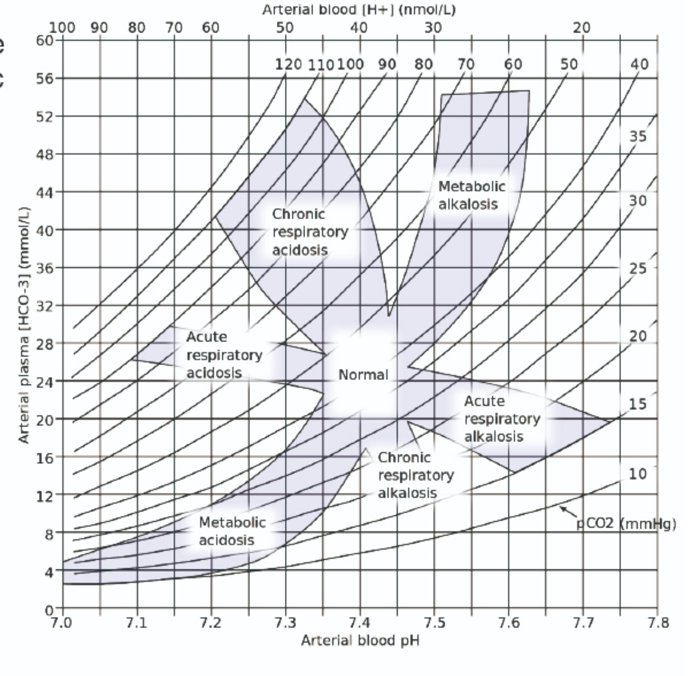

<!DOCTYPE html>
<html lang="zh-TW">
<head>
    <meta charset="UTF-8">
    <meta name="viewport" content="width=device-width, initial-scale=1.0">
    <title>動脈血氣體分析 (ABG) 判讀輔助工具</title>
    
    <!-- 引入 React 與 ReactDOM -->
    <script crossorigin src="https://unpkg.com/react@18/umd/react.production.min.js"></script>
    <script crossorigin src="https://unpkg.com/react-dom@18/umd/react-dom.production.min.js"></script>
    
    <!-- 引入 Babel 用於瀏覽器端編譯 JSX -->
    <script src="https://unpkg.com/@babel/standalone/babel.min.js"></script>
    
    <!-- 引入 Tailwind CSS -->
    <script src="https://cdn.tailwindcss.com"></script>
    
    <!-- 引入 FontAwesome 圖示 -->
    <link rel="stylesheet" href="https://cdnjs.cloudflare.com/ajax/libs/font-awesome/6.4.0/css/all.min.css">

    <style>
        body { font-family: -apple-system, BlinkMacSystemFont, "Segoe UI", Roboto, "Helvetica Neue", Arial, sans-serif; background-color: #f8fafc; }
        .glass-panel { background: rgba(255, 255, 255, 0.95); backdrop-filter: blur(10px); box-shadow: 0 10px 25px -5px rgba(0, 0, 0, 0.1), 0 8px 10px -6px rgba(0, 0, 0, 0.1); }
        .input-focus-ring:focus-within { box-shadow: 0 0 0 2px #3b82f6; border-color: #3b82f6; }
        
        /* 動畫效果 */
        @keyframes fadeIn {
            from { opacity: 0; transform: translateY(10px); }
            to { opacity: 1; transform: translateY(0); }
        }
        .animate-fade-in { animation: fadeIn 0.4s ease-out forwards; }
    </style>
</head>
<body>
    <div id="root"></div>

    <script type="text/babel">
        const { useState, useEffect, useRef } = React;

        // --- 診斷資料庫 (整合新增的重點與趨勢) ---
        const DIAGNOSIS_DATA = {
            "Metabolic acidosis": {
                title: "代謝性酸中毒 (Metabolic Acidosis)",
                color: "text-red-600",
                bgColor: "bg-red-50",
                icon: "fa-droplet",
                trend: [
                    { label: "pH", value: "⬇️ (<7.35)" },
                    { label: "HCO3⁻", value: "⬇️ (原發)" },
                    { label: "PaCO2", value: "⬇️ (代償)" }
                ],
                desc: "原發性 HCO3- 降低導致血液變酸。正常生理代償會透過過度換氣來降低 PaCO2。",
                causes: [
                    "糖尿病酮酸中毒 (DKA)",
                    "乳酸堆積（如：休克、敗血症）",
                    "腎衰竭、尿毒症",
                    "嚴重腹瀉 (流失鹼性腸液)",
                    "其他高陰離子間隙中毒 (如：水楊酸)"
                ]
            },
            "Metabolic alkalosis": {
                title: "代謝性鹼中毒 (Metabolic Alkalosis)",
                color: "text-blue-600",
                bgColor: "bg-blue-50",
                icon: "fa-arrow-up-right-dots",
                trend: [
                    { label: "pH", value: "⬆️ (>7.45)" },
                    { label: "HCO3⁻", value: "⬆️ (原發)" },
                    { label: "PaCO2", value: "⬆️ (代償)" }
                ],
                desc: "原發性 HCO3- 升高導致血液變鹼。代償機制為呼吸變慢以保留二氧化碳。",
                causes: [
                    "嚴重嘔吐 (流失胃酸)",
                    "長期胃管抽吸 (NG tube drainage)",
                    "使用利尿劑",
                    "低鉀血症",
                    "內分泌異常 (如：原發性醛固酮增多症)"
                ]
            },
            "Acute respiratory acidosis": {
                title: "急性呼吸性酸中毒 (Acute Resp. Acidosis)",
                color: "text-orange-600",
                bgColor: "bg-orange-50",
                icon: "fa-lungs",
                trend: [
                    { label: "pH", value: "⬇️ (<7.35)" },
                    { label: "PaCO2", value: "⬆️ (原發)" },
                    { label: "HCO3⁻", value: "⬆️ (代償/輕微)" }
                ],
                desc: "急性 PaCO2 升高導致血液變酸。腎臟尚未有足夠時間進行代償。",
                causes: [
                    "呼吸衰竭",
                    "呼吸道阻塞 (如：異物吸入、嚴重氣喘)",
                    "藥物抑制呼吸 (如：鎮靜劑、鴉片類藥物過量)",
                    "神經肌肉疾病急性發作 (如：重症肌無力)"
                ]
            },
            "Chronic respiratory acidosis": {
                title: "慢性呼吸性酸中毒 (Chronic Resp. Acidosis)",
                color: "text-amber-600",
                bgColor: "bg-amber-50",
                icon: "fa-lungs-virus",
                trend: [
                    { label: "pH", value: "⬇️ (接近正常)" },
                    { label: "PaCO2", value: "⬆️ (原發)" },
                    { label: "HCO3⁻", value: "⬆️ (代償/顯著)" }
                ],
                desc: "長期 PaCO2 升高，腎臟已進行代償保留 HCO3-，使 pH 值接近正常但仍偏酸。",
                causes: [
                    "慢性阻塞性肺病 (COPD)",
                    "肥胖低通氣症候群 (OHS)",
                    "長期神經肌肉疾病或胸廓異常"
                ]
            },
            "Acute respiratory alkalosis": {
                title: "急性呼吸性鹼中毒 (Acute Resp. Alkalosis)",
                color: "text-teal-600",
                bgColor: "bg-teal-50",
                icon: "fa-wind",
                trend: [
                    { label: "pH", value: "⬆️ (>7.45)" },
                    { label: "PaCO2", value: "⬇️ (原發)" },
                    { label: "HCO3⁻", value: "⬇️ (代償/輕微)" }
                ],
                desc: "急性 PaCO2 降低 (過度換氣) 導致血液變鹼。腎臟尚未完全代償。",
                causes: [
                    "過度換氣（如：焦慮、恐慌發作、疼痛）",
                    "缺氧 (如：高海拔環境、初期肺栓塞)",
                    "早期氣喘發作",
                    "中樞神經刺激 (如：發燒、早期水楊酸中毒)"
                ]
            },
            "Chronic respiratory alkalosis": {
                title: "慢性呼吸性鹼中毒 (Chronic Resp. Alkalosis)",
                color: "text-cyan-600",
                bgColor: "bg-cyan-50",
                icon: "fa-leaf",
                trend: [
                    { label: "pH", value: "⬆️ (接近正常)" },
                    { label: "PaCO2", value: "⬇️ (原發)" },
                    { label: "HCO3⁻", value: "⬇️ (代償/顯著)" }
                ],
                desc: "長期 PaCO2 降低，腎臟代償排出 HCO3-，pH 值接近正常但仍偏鹼。",
                causes: [
                    "懷孕 (黃體素刺激)",
                    "慢性肝病、肝衰竭",
                    "長期居住於高海拔區域"
                ]
            },
            "Normal": {
                title: "正常 (Normal)",
                color: "text-green-600",
                bgColor: "bg-green-50",
                icon: "fa-check-circle",
                trend: [
                    { label: "pH", value: "7.35 - 7.45" },
                    { label: "PaCO2", value: "35 - 45" },
                    { label: "HCO3⁻", value: "22 - 26" }
                ],
                desc: "血液酸鹼值 (pH)、二氧化碳分壓 (PaCO2) 及碳酸氫根 (HCO3-) 皆落在正常範圍內。",
                causes: ["無明顯酸鹼異常。"]
            },
            "Mixed": {
                title: "混合型或代償中 (Mixed/Uncompensated)",
                color: "text-slate-600",
                bgColor: "bg-slate-100",
                icon: "fa-circle-exclamation",
                trend: null,
                desc: "數值未落入單一典型的酸鹼異常區域，可能同時存在兩種以上的原發性異常，或是正處於過渡代償階段。",
                causes: [
                    "患者可能同時存在多重病因，例如：同時有敗血症(乳酸中毒)併發呼吸衰竭(呼吸性酸中毒)。",
                    "亦可能為單一異常尚未達到穩定代償狀態。",
                    "請綜合患者的病史、用藥紀錄與臨床症狀進行最終判斷。"
                ]
            }
        };

        // --- 核心邏輯演算法 ---
        function getDiagnosis(phStr, pco2Str, hco3Str) {
            const ph = parseFloat(phStr);
            const pco2 = parseFloat(pco2Str);
            const hco3 = parseFloat(hco3Str);

            if (isNaN(ph) || isNaN(pco2) || isNaN(hco3)) return null;

            if (ph >= 7.35 && ph <= 7.45 && pco2 >= 35 && pco2 <= 45 && hco3 >= 22 && hco3 <= 26) {
                return "Normal";
            }

            const exp_pco2_ma = 1.5 * hco3 + 8; 
            const exp_pco2_mal = 40 + 0.7 * (hco3 - 24);
            const exp_hco3_ara = 24 + 0.1 * (pco2 - 40);
            const exp_hco3_cra = 24 + 0.4 * (pco2 - 40);
            const exp_hco3_aral = 24 - 0.2 * (40 - pco2);
            const exp_hco3_cral = 24 - 0.5 * (40 - pco2);

            if (ph < 7.38 && hco3 < 24 && Math.abs(pco2 - exp_pco2_ma) <= 2.5) return "Metabolic acidosis";
            if (ph > 7.42 && hco3 > 24 && Math.abs(pco2 - exp_pco2_mal) <= 3.5) return "Metabolic alkalosis";
            if (ph < 7.42 && pco2 > 42 && Math.abs(hco3 - exp_hco3_ara) <= 2.5) return "Acute respiratory acidosis";
            if (ph < 7.42 && pco2 > 42 && Math.abs(hco3 - exp_hco3_cra) <= 4.0) return "Chronic respiratory acidosis";
            if (ph > 7.38 && pco2 < 38 && Math.abs(hco3 - exp_hco3_aral) <= 2.5) return "Acute respiratory alkalosis";
            if (ph > 7.38 && pco2 < 38 && Math.abs(hco3 - exp_hco3_cral) <= 3.0) return "Chronic respiratory alkalosis";

            return "Mixed";
        }

        // --- 主應用程式元件 ---
        const App = () => {
            const [ph, setPh] = useState('');
            const [pco2, setPco2] = useState('');
            const [hco3, setHco3] = useState('');
            const [clickPos, setClickPos] = useState(null);
            const imageRef = useRef(null);

            const handleImageClick = (e) => {
                if (!imageRef.current) return;
                
                const rect = imageRef.current.getBoundingClientRect();
                const xPct = ((e.clientX - rect.left) / rect.width) * 100;
                const yPct = ((e.clientY - rect.top) / rect.height) * 100;

                const GRID_LEFT_PCT = 13.5;  
                const GRID_RIGHT_PCT = 95.0; 
                const GRID_TOP_PCT = 5.5;    
                const GRID_BOTTOM_PCT = 90.0;

                const clampedX = Math.max(GRID_LEFT_PCT, Math.min(xPct, GRID_RIGHT_PCT));
                const clampedY = Math.max(GRID_TOP_PCT, Math.min(yPct, GRID_BOTTOM_PCT));

                const calcPh = 7.0 + ((clampedX - GRID_LEFT_PCT) / (GRID_RIGHT_PCT - GRID_LEFT_PCT)) * (7.8 - 7.0);
                const calcHco3 = 60 - ((clampedY - GRID_TOP_PCT) / (GRID_BOTTOM_PCT - GRID_TOP_PCT)) * 60;
                const calcPco2 = calcHco3 / (0.03 * Math.pow(10, calcPh - 6.1));

                setPh(calcPh.toFixed(2));
                setHco3(calcHco3.toFixed(1));
                setPco2(calcPco2.toFixed(1));
                setClickPos({ x: xPct, y: yPct });
            };

            const handleInputChange = (setter) => (e) => {
                setter(e.target.value);
                setClickPos(null); 
            };

            const resetData = () => {
                setPh('');
                setPco2('');
                setHco3('');
                setClickPos(null);
            };

            const diagKey = getDiagnosis(ph, pco2, hco3);
            const currentDiag = diagKey ? DIAGNOSIS_DATA[diagKey] : null;

            return (
                <div className="min-h-screen pb-12 flex flex-col font-sans">
                    {/* Header */}
                    <header className="bg-slate-900 text-white shadow-md pt-6 pb-6 px-4 md:px-8 mb-8">
                        <div className="max-w-6xl mx-auto flex items-center gap-3">
                            <i className="fa-solid fa-notes-medical text-3xl text-blue-400"></i>
                            <div>
                                <h1 className="text-2xl font-bold tracking-wide">ABG 酸鹼圖譜判讀輔助工具</h1>
                                <p className="text-slate-400 text-sm mt-1">點擊圖表或輸入數值，自動分析動脈血氣體報告與病因</p>
                            </div>
                        </div>
                    </header>

                    <main className="max-w-6xl mx-auto px-4 md:px-8 w-full flex-grow">
                        <div className="grid grid-cols-1 lg:grid-cols-12 gap-8 mb-8">
                            
                            {/* 左側：互動式圖表 */}
                            <div className="lg:col-span-7 flex flex-col gap-4">
                                <div className="glass-panel rounded-2xl p-4 md:p-6 relative overflow-hidden group border border-slate-200">
                                    <div className="absolute top-6 left-6 z-10 bg-white/90 backdrop-blur text-slate-700 text-xs font-bold px-3 py-1.5 rounded-full shadow-sm flex items-center gap-2 pointer-events-none opacity-80 group-hover:opacity-100 transition-opacity border border-slate-200">
                                        <i className="fa-solid fa-hand-pointer text-blue-500"></i> 支援圖片點擊互動
                                    </div>
                                    
                                    <div 
                                        className="relative w-full cursor-crosshair border border-slate-200 rounded-xl overflow-hidden bg-white shadow-sm"
                                        onClick={handleImageClick}
                                    >
                                         {
                                                e.target.onerror = null; 
                                                e.target.src = "https://via.placeholder.com/800x600.png?text=請將+abg_chart.jpg+放在同一目錄下";
                                            }}
                                        />
                                        
                                        {/* 點擊標記 */}
                                        {clickPos && (
                                            <div 
                                                className="absolute w-4 h-4 bg-blue-500 border-2 border-white rounded-full shadow-md transform -translate-x-1/2 -translate-y-1/2 pointer-events-none transition-all duration-200 ease-out"
                                                style={{ left: `${clickPos.x}%`, top: `${clickPos.y}%` }}
                                            >
                                                <div className="absolute inset-0 bg-blue-500 rounded-full animate-ping opacity-75"></div>
                                            </div>
                                        )}
                                    </div>
                                    <p className="text-center text-slate-400 text-xs mt-3">
                                        註：圖表點擊所計算出之數值為內插近似值。
                                    </p>
                                </div>
                            </div>

                            {/* 右側：資料輸入與判讀結果 */}
                            <div className="lg:col-span-5 flex flex-col gap-6">
                                
                                {/* 手動輸入區塊 */}
                                <div className="glass-panel rounded-2xl p-6 border border-slate-200 shadow-sm">
                                    <div className="flex justify-between items-center mb-5">
                                        <h2 className="text-lg font-bold text-slate-800 flex items-center gap-2">
                                            <i className="fa-solid fa-keyboard text-slate-400"></i> 血液數值輸入
                                        </h2>
                                        <button 
                                            onClick={resetData}
                                            className="text-sm text-slate-500 hover:text-red-500 transition-colors flex items-center gap-1 bg-slate-100 px-3 py-1 rounded-md hover:bg-red-50"
                                        >
                                            <i className="fa-solid fa-rotate-right"></i> 清除
                                        </button>
                                    </div>

                                    <div className="grid grid-cols-3 gap-3">
                                        <div className="flex flex-col gap-1">
                                            <label className="text-xs font-semibold text-slate-500">pH 值</label>
                                            <div className="input-focus-ring flex items-center border border-slate-300 rounded-lg bg-white overflow-hidden transition-all">
                                                <input 
                                                    type="number" step="0.01" value={ph} onChange={handleInputChange(setPh)} 
                                                    className="w-full p-2.5 outline-none text-center font-mono font-medium text-slate-800" placeholder="7.40"
                                                />
                                            </div>
                                        </div>
                                        <div className="flex flex-col gap-1">
                                            <label className="text-xs font-semibold text-slate-500">PaCO2 <span className="text-[10px] font-normal">(mmHg)</span></label>
                                            <div className="input-focus-ring flex items-center border border-slate-300 rounded-lg bg-white overflow-hidden transition-all">
                                                <input 
                                                    type="number" step="0.1" value={pco2} onChange={handleInputChange(setPco2)} 
                                                    className="w-full p-2.5 outline-none text-center font-mono font-medium text-slate-800" placeholder="40.0"
                                                />
                                            </div>
                                        </div>
                                        <div className="flex flex-col gap-1">
                                            <label className="text-xs font-semibold text-slate-500">HCO3- <span className="text-[10px] font-normal">(mmol/L)</span></label>
                                            <div className="input-focus-ring flex items-center border border-slate-300 rounded-lg bg-white overflow-hidden transition-all">
                                                <input 
                                                    type="number" step="0.1" value={hco3} onChange={handleInputChange(setHco3)} 
                                                    className="w-full p-2.5 outline-none text-center font-mono font-medium text-slate-800" placeholder="24.0"
                                                />
                                            </div>
                                        </div>
                                    </div>
                                </div>

                                {/* 判讀結果區塊 */}
                                <div className="glass-panel rounded-2xl flex-1 flex flex-col border border-slate-200 shadow-sm overflow-hidden min-h-[400px]">
                                    <div className="bg-white border-b border-slate-100 px-6 py-4">
                                        <h2 className="text-lg font-bold text-slate-800 flex items-center gap-2">
                                            <i className="fa-solid fa-stethoscope text-blue-500"></i> 判讀分析結果
                                        </h2>
                                    </div>
                                    
                                    <div className="p-6 flex-1 flex flex-col bg-slate-50/50">
                                        {!currentDiag ? (
                                            <div className="flex-1 flex flex-col items-center justify-center text-slate-400 gap-4">
                                                <i className="fa-solid fa-chart-area text-5xl opacity-20"></i>
                                                <p className="text-center text-sm">請點擊左側圖表區域<br/>或在上方輸入完整數值以顯示分析。</p>
                                            </div>
                                        ) : (
                                            <div className={`animate-fade-in flex-1 flex flex-col h-full ${currentDiag.bgColor} rounded-xl p-5 border shadow-sm ${currentDiag.color.replace('text-', 'border-').replace('600', '200')}`}>
                                                <div className="flex items-start gap-4 mb-4">
                                                    <div className={`w-12 h-12 rounded-full bg-white shadow-sm flex items-center justify-center shrink-0 ${currentDiag.color}`}>
                                                        <i className={`fa-solid ${currentDiag.icon} text-2xl`}></i>
                                                    </div>
                                                    <div>
                                                        <h3 className={`text-xl font-bold mb-1 ${currentDiag.color}`}>
                                                            {currentDiag.title}
                                                        </h3>
                                                        <p className="text-slate-600 text-sm leading-relaxed">
                                                            {currentDiag.desc}
                                                        </p>
                                                    </div>
                                                </div>

                                                {/* 趨勢指標 (箭頭) */}
                                                {currentDiag.trend && (
                                                    <div className="flex flex-wrap gap-2 mt-2 mb-5">
                                                        {currentDiag.trend.map((t, idx) => (
                                                            <div key={idx} className="bg-white/80 border border-white backdrop-blur px-3 py-1.5 rounded-lg shadow-sm flex items-center gap-2 text-sm">
                                                                <span className="font-bold text-slate-700">{t.label}</span>
                                                                <span className={currentDiag.color}>{t.value}</span>
                                                            </div>
                                                        ))}
                                                    </div>
                                                )}
                                                
                                                <div className="mt-auto bg-white/80 backdrop-blur rounded-lg p-4 border border-white shadow-sm">
                                                    <h4 className="text-sm font-bold text-slate-800 mb-3 flex items-center gap-2">
                                                        <i className="fa-solid fa-clipboard-list text-slate-400"></i> 常見潛在病因：
                                                    </h4>
                                                    <ul className="list-disc list-inside text-sm text-slate-700 space-y-2 ml-1">
                                                        {currentDiag.causes.map((cause, idx) => (
                                                            <li key={idx} className="leading-snug">{cause}</li>
                                                        ))}
                                                    </ul>
                                                </div>
                                            </div>
                                        )}
                                    </div>
                                </div>

                            </div>
                        </div>

                        {/* 下方：快速參考表格 (Cheat Sheet) */}
                        <div className="glass-panel rounded-2xl p-6 border border-slate-200 shadow-sm mt-8">
                            <h2 className="text-lg font-bold text-slate-800 flex items-center gap-2 mb-4">
                                <i className="fa-solid fa-bolt text-yellow-500"></i> 快速記憶與參考口訣
                            </h2>
                            <div className="overflow-x-auto">
                                <table className="w-full text-left border-collapse min-w-[700px]">
                                    <thead>
                                        <tr className="bg-slate-100 text-slate-600 text-sm uppercase tracking-wider border-b border-slate-200">
                                            <th className="p-3 font-bold rounded-tl-lg">酸鹼異常類型</th>
                                            <th className="p-3 font-bold">數值趨勢</th>
                                            <th className="p-3 font-bold rounded-tr-lg">常見病因</th>
                                        </tr>
                                    </thead>
                                    <tbody className="text-sm text-slate-700">
                                        <tr className="border-b border-slate-100 hover:bg-orange-50/50 transition-colors">
                                            <td className="p-3 font-bold text-orange-600">呼吸性酸中毒</td>
                                            <td className="p-3 font-mono text-slate-800 bg-white">
                                                pH ⬇️ (&lt;7.35) <span className="text-slate-300 mx-1">|</span> 
                                                <span className="font-bold">PaCO2 ⬆️</span> <span className="text-slate-300 mx-1">|</span> 
                                                HCO3⁻ ⬆️
                                            </td>
                                            <td className="p-3">呼吸衰竭、呼吸道阻塞、藥物抑制呼吸、神經肌肉疾病</td>
                                        </tr>
                                        <tr className="border-b border-slate-100 hover:bg-teal-50/50 transition-colors">
                                            <td className="p-3 font-bold text-teal-600">呼吸性鹼中毒</td>
                                            <td className="p-3 font-mono text-slate-800 bg-white">
                                                pH ⬆️ (&gt;7.45) <span className="text-slate-300 mx-1">|</span> 
                                                <span className="font-bold">PaCO2 ⬇️</span> <span className="text-slate-300 mx-1">|</span> 
                                                HCO3⁻ ⬇️
                                            </td>
                                            <td className="p-3">過度換氣（焦慮、疼痛）、缺氧、早期氣喘發作</td>
                                        </tr>
                                        <tr className="border-b border-slate-100 hover:bg-red-50/50 transition-colors">
                                            <td className="p-3 font-bold text-red-600">代謝性酸中毒</td>
                                            <td className="p-3 font-mono text-slate-800 bg-white">
                                                pH ⬇️ (&lt;7.35) <span className="text-slate-300 mx-1">|</span> 
                                                <span className="font-bold">HCO3⁻ ⬇️</span> <span className="text-slate-300 mx-1">|</span> 
                                                PaCO2 ⬇️
                                            </td>
                                            <td className="p-3">糖尿病酮酸中毒、乳酸堆積（休克）、腎衰竭、嚴重腹瀉</td>
                                        </tr>
                                        <tr className="hover:bg-blue-50/50 transition-colors">
                                            <td className="p-3 font-bold text-blue-600">代謝性鹼中毒</td>
                                            <td className="p-3 font-mono text-slate-800 bg-white">
                                                pH ⬆️ (&gt;7.45) <span className="text-slate-300 mx-1">|</span> 
                                                <span className="font-bold">HCO3⁻ ⬆️</span> <span className="text-slate-300 mx-1">|</span> 
                                                PaCO2 ⬆️
                                            </td>
                                            <td className="p-3">嚴重嘔吐、長期胃管抽吸、使用利尿劑、低鉀血症</td>
                                        </tr>
                                    </tbody>
                                </table>
                            </div>
                        </div>

                    </main>
                </div>
            );
        };

        const root = ReactDOM.createRoot(document.getElementById('root'));
        root.render(<App />);
    </script>
</body>
</html>


